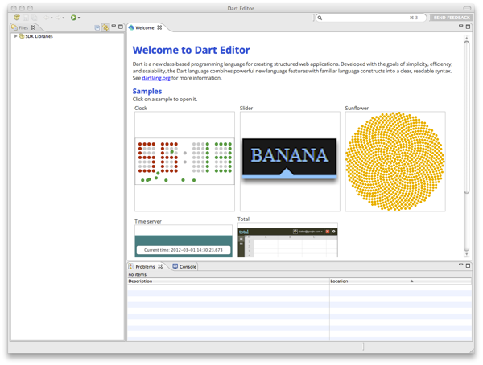
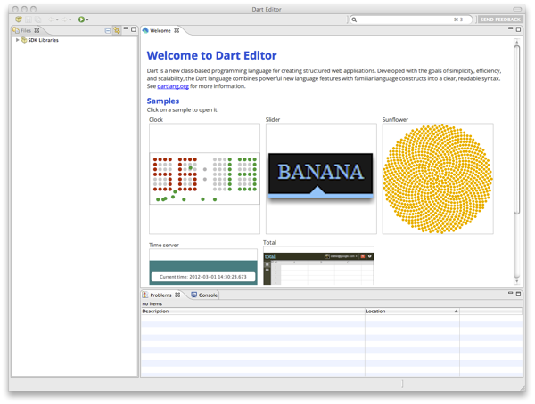

Step 2: Launch the editor
Go to your Dart installation directory, and double-click DartEditor.
You should see the Dart Editor application window appear, looking something like this:
Follow this tutorial to install and use Dart Editor on Linux.
Dart Editor is a lightweight, open-source editor based on Eclipse components. In addition to editing Dart programs, you can use Dart Editor to invoke the Dart-to-JavaScript compiler and launch Dart-based web apps.
In this step, you'll install Dart Editor and, if necessary, a Java runtime environment.
If you don't know whether you have 32-bit or 64-bit Linux,
use the command uname -a.
If 64 is in the output,
you have 64-bit Linux;
otherwise, you have 32-bit Linux.
$ unzip DartBuild-linux.gtk.x86_64.zip
Put the resulting directory somewhere convenient,
such as /home/me/dart.
We'll call this your Dart installation directory.
This installation directory contains
the DartEditor executable file and several subdirectories,
including a samples directory.
If you don't already have a Java runtime, download and install it. You can get JDK 7 from Java SE Development Kit 7 Downloads.
Go to your Dart installation directory, and double-click DartEditor.
You should see the Dart Editor application window appear, looking something like this:
506 echo $PATH 507 source ~/.bash_profile 508 ./DartEditor 509 cd .. 510 mv dart dart-32 511 ls 512 cp ~/tmp/DartBuild-linux.gtk.x86_64.zip . 513 unzip DartBuild-linux.gtk.x86_64.zip 514 cd 515 ls 516 mv sunjdk/ sunjdk-32 517 mkdir sunjdk 518 cd sunjdk 519 mv ~/tmp/jdk-7-linux-x64.tar.gz . 520 tar xvf jdk-7-linux-x64.tar.gz{% endcomment %} {% comment %} NOTE: The rest of this doc is in the following include file. {% endcomment %} {% include docs/getting-started/editor/_index.html %}